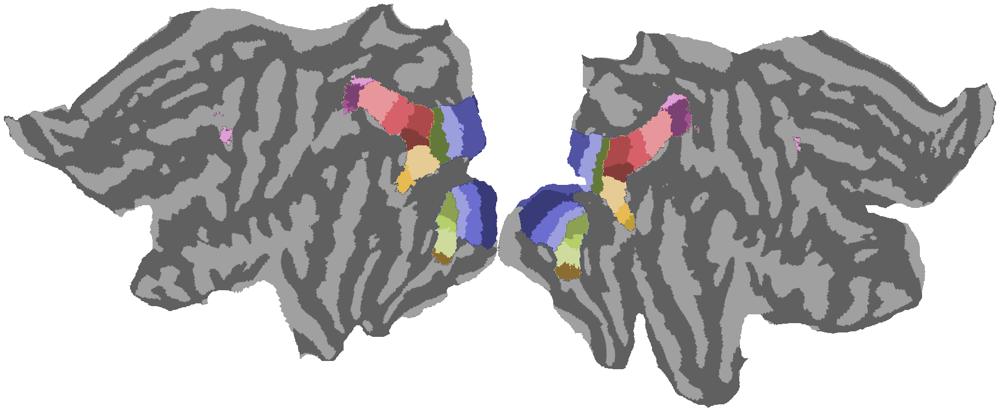
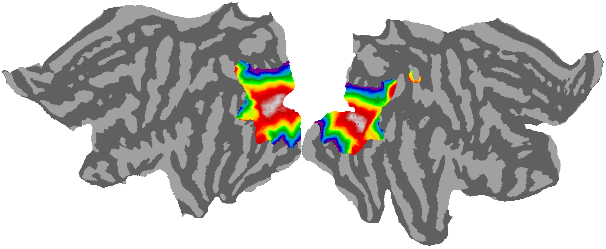
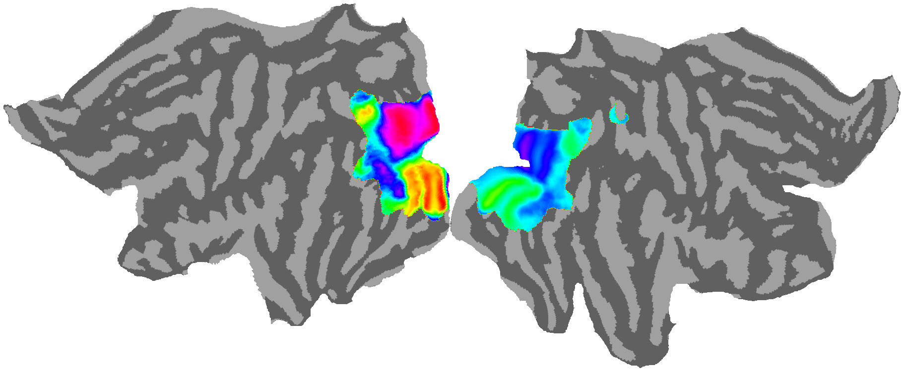
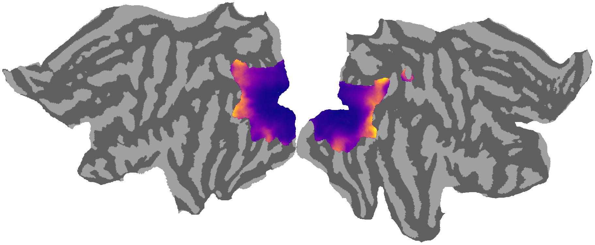
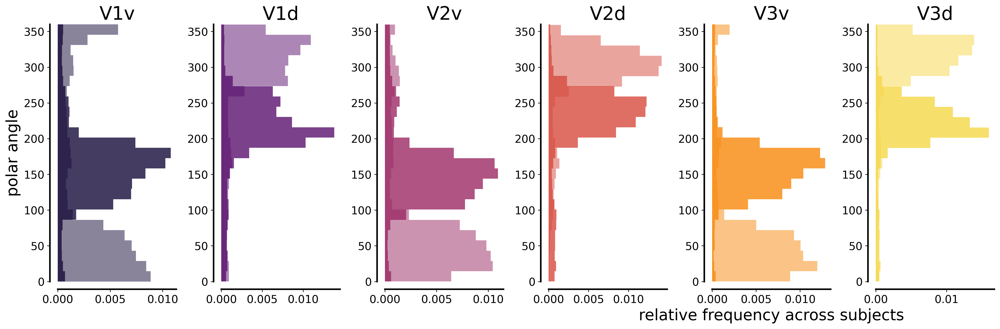

2. Retinotopy-constrained ROI Network Extraction¶
This notebook illustrates how to extract a network of region-of-interest (ROI) time series from visual cortex areas V1/V2/V3 defined by the Wang-Kastner atlas and the average population receptive field (pRF) maps included in the Human Connectome Project (HCP) 7T fMRI dataset.
The processing pipeline consists of six stages: configuring the environment with pyCortex and neuroimaging libraries for the 59k fsaverage_LR surface space, visualizing HCP group-average retinotopy maps (181 subjects) with R² thresholding (10%) to mask unreliable voxels, analyzing visual field selectivity through polar angle histograms for quality control, checking download status of subjects with complete data (>5GB), extracting mean time series from all 25 Wang-Kastner visual areas across 10
scan types per subject (retinotopy stimulus, movie-watching, resting state) with z-scoring and R² masking, and subdividing V1/V2/V3 into 12 quarter-field subregions per hemisphere based on eccentricity bins (0-2° foveal, 2-6° para-foveal) and polar angle quadrants for fine-grained retinotopic connectivity analysis. Output is organized into Wang-Kastner/ directory for full 25-ROI time series and EVC/ directory for V1/V2/V3 quarter-field time series, saved as .mat files.
The division between foveal and para-foveal bins is to approximate halves with similar cortical area. For details see following paper (Figure 6):
Benson, N. C., Yoon, J. M. D., Forenzo, D., Engel, S. A., Kay, K. N., & Winawer, J. (2022). Variability of the surface area of the V1, V2, and V3 maps in a large sample of human observers. Journal of Neuroscience, 42(46), 8629-8646. https://doi.org/10.1523/JNEUROSCI.0690-21.2022
The subdivision into 24 ROI encompasing foveal and para-foveal quarter-fields was originally introduced in:
Gravel, N., Renken, R. J., Harvey, B. M., Deco, G., Cornelissen, F. W., & Gilson, M. (2020). Propagation of BOLD activity reveals task-dependent directed interactions across human visual cortex. Cerebral Cortex, 30(11), 5899-5914. https://doi.org/10.1093/cercor/bhaa165
2.1. Environment setup & pyCortex configuration¶
Configure pyCortex filestore with HCP template subject (hcp_999999) and import neuroimaging libraries for CIFTI file handling in 59k fsaverage_LR surface space.
[ ]:
%matplotlib inline
import numpy as np
import nibabel as nb
from matplotlib import pyplot as plt
import nilearn.surface as surface
from matplotlib.colors import ListedColormap
import cortex
import cortex.polyutils
from cortex.options import config
print(cortex.options.usercfg)
print(config.get('basic','filestore'))
# I expect to see RuntimeWarnings in this block
import warnings
warnings.filterwarnings(action='ignore', message='Mean of empty slice')
warnings.filterwarnings(action='ignore', message='invalid value encountered in remainder')
# HCP template subject
# note: I used the connectome workbench to adapt some atlases. Specifically the following functions:
# wb_command -cifti-separate
# wb_command -metric-resample
# wb_command -cifti-create-dense-scalar
#
# you the workbench in the path:
# echo 'export PATH=$PATH:/Applications/workbench/bin_macosx64' >> ~/.bashrc
# source .bashrc
# ---------------------------------------------------------------------------------------------------------------------------
folder = '/home/nicogravel/anaconda3/envs/py36/share/pycortex/db/hcp_999999/atlases'
subject = 'hcp_999999'
#bks = '/Users/nicogravel/piCortex/share/pycortex/db/hcp_999999/surfaces'
#surf = '/bks/100610.L.very_inflated_1.6mm_MSMAll.59k_fs_LR.surf.gii'
# ---------------------------------------------------------------------------------------------------------------------------
# HCP retinotopic atlases (for 181 subjects)
# ...obtained from the .nii cifti HCP files using nibabel 'load'
# ----------------------------------------------------------------------------------------------------------------------
r2thr = 10
subj = 2
def surf_data_from_cifti(data, axis, surf_name):
assert isinstance(axis, nb.cifti2.BrainModelAxis)
for name, data_indices, model in axis.iter_structures(): # Iterates over volumetric and surface structures
if name == surf_name: # Just looking for a surface
data = data.T[data_indices] # Assume brainmodels axis is last, move it to front
vtx_indices = model.vertex # Generally 1-N, except medial wall vertices
surf_data = np.zeros((vtx_indices.max() + 1,) + data.shape[1:], dtype=data.dtype)
surf_data[vtx_indices] = data
return surf_data
raise ValueError(f"No structure named {surf_name}")
# ---------------------------------------------------------------------------------------------------------------------------
# Variance explained
# ---------------------------------------------------------------------------------------------------------------------------
ret_map = '/fsaverage_LR59k/S1200_7T_Retinotopy181.All.Fit3_R2_MSMAll.59k_fs_LR.dscalar.nii'
cifti = nb.load(folder + ret_map)
cifti_data = cifti.get_fdata(dtype=np.float32)
cifti_hdr = cifti.header
axes = [cifti_hdr.get_axis(i) for i in range(cifti.ndim)]
map_lh = surf_data_from_cifti(cifti_data, axes[1], 'CIFTI_STRUCTURE_CORTEX_LEFT')
map_rh = surf_data_from_cifti(cifti_data, axes[1], 'CIFTI_STRUCTURE_CORTEX_RIGHT')
#rsq_mask = np.hstack((map_lh[:,0], map_rh[:,0]))
rsq_mask = np.hstack((np.nanmean(map_lh,axis=1), np.nanmean(map_rh,axis=1)))
print(np.nanmin(rsq_mask.flatten()))
print(np.nanmax(rsq_mask.flatten()))
# ---------------------------------------------------------------------------------------------------------------------------
# Wang-Kastner atlas of visual areas + curvature maps
# ...obtained from the .nii cifti HCP files using nibabel 'cifti2'
# ---------------------------------------------------------------------------------------------------------------------------
wang_lh = '/fsaverage_LR59k/L.wang2015.59k_fs_LR.label.gii'
wang_rh = '/fsaverage_LR59k/R.wang2015.59k_fs_LR.label.gii'
map_lh = nb.load(folder + wang_lh).agg_data()
map_rh = nb.load(folder + wang_rh).agg_data()
both_hemis = np.hstack((map_lh , map_rh))
# Whole atlases
vmax = np.nanmax(both_hemis.flatten())
vmin = np.nanmin(both_hemis.flatten())
cmap = plt.cm.get_cmap('tab20b').copy()
cmap.set_under('k', alpha=0)
vertex = cortex.Vertex(both_hemis, subject, cmap, vmin=vmin+0.0001, vmax=vmax)
cortex.quickshow(vertex , with_rois=False, with_curvature=True,with_colorbar=False)
plt.show()
# Thresholded by the HCP pRFs variance explained
vmax = np.nanmax(both_hemis.flatten())
vmin = np.nanmin(both_hemis.flatten())
both_hemis[np.where(rsq_mask<r2thr)]=-1
cmap = plt.cm.get_cmap('tab20b').copy()
cmap.set_under('k', alpha=0)
vertex = cortex.Vertex(both_hemis, subject, cmap, vmin=vmin+0.0001, vmax=vmax)
cortex.quickshow(vertex , with_rois=False, with_curvature=True,with_colorbar=False)
plt.show()
/home/nicogravel/anaconda3/envs/py36/lib/python3.9/site-packages/scipy/__init__.py:146: UserWarning: A NumPy version >=1.16.5 and <1.23.0 is required for this version of SciPy (detected version 1.23.5
warnings.warn(f"A NumPy version >={np_minversion} and <{np_maxversion}"
/home/nicogravel/.config/pycortex/options.cfg
/home/nicogravel/anaconda3/envs/py36/share/pycortex/db
0.0
56.061077

2.2. Retinotopic map visualization¶
Load and visualize HCP group-average retinotopy maps including variance explained (R²), Wang-Kastner atlas, eccentricity, polar angle, and pRF size on inflated cortical surfaces.
[2]:
# ---------------------------------------------------------------------------------------------------------------------------
# Eccentricity
# ---------------------------------------------------------------------------------------------------------------------------
ret_map = '/fsaverage_LR59k/S1200_7T_Retinotopy181.All.Fit3_Eccentricity_MSMAll.59k_fs_LR.dscalar.nii'
cifti = nb.load(folder + ret_map)
cifti_data = cifti.get_fdata(dtype=np.float32)
cifti_hdr = cifti.header
axes = [cifti_hdr.get_axis(i) for i in range(cifti.ndim)]
map_lh = surf_data_from_cifti(cifti_data, axes[1], 'CIFTI_STRUCTURE_CORTEX_LEFT')
map_rh = surf_data_from_cifti(cifti_data, axes[1], 'CIFTI_STRUCTURE_CORTEX_RIGHT')
both_hemis = np.hstack((map_lh[:,subj-1], map_rh[:,subj-1]))
both_hemis = np.hstack((np.nanmean(map_lh,axis=1), np.nanmean(map_rh,axis=1)))
both_hemis[np.where(rsq_mask<r2thr)]=np.nan
vmax = np.nanmax(both_hemis.flatten())
vmin = np.nanmin(both_hemis.flatten())
both_hemis[np.where(rsq_mask<r2thr)]=-1
cmap = plt.cm.get_cmap('nipy_spectral_r').copy()
cmap.set_under('k', alpha=0)
vertex = cortex.Vertex(both_hemis, subject, cmap, vmin=vmin+0.01, vmax=vmax)
cortex.quickshow(vertex , with_rois=False, with_curvature=True,with_colorbar=False)
plt.show()

[6]:
# ---------------------------------------------------------------------------------------------------------------------------
# Polar angle
# ---------------------------------------------------------------------------------------------------------------------------
ret_map = '/fsaverage_LR59k/S1200_7T_Retinotopy181.All.Fit3_PolarAngle_MSMAll.59k_fs_LR.dscalar.nii'
cifti = nb.load(folder + ret_map)
cifti_data = cifti.get_fdata(dtype=np.float32)
axes = [cifti_hdr.get_axis(i) for i in range(cifti.ndim)]
map_lh = surf_data_from_cifti(cifti_data, axes[1], 'CIFTI_STRUCTURE_CORTEX_LEFT')
map_rh = surf_data_from_cifti(cifti_data, axes[1], 'CIFTI_STRUCTURE_CORTEX_RIGHT')
both_hemis = np.hstack((map_lh[:,subj-1], map_rh[:,subj-1]))
both_hemis = np.hstack((np.nanmean(map_lh,axis=1), np.nanmean(map_rh,axis=1)))
both_hemis[np.where(rsq_mask<r2thr)]=np.nan
vmax = np.nanmax(both_hemis.flatten())
vmin = np.nanmin(both_hemis.flatten())
both_hemis[np.where(rsq_mask<r2thr)]=-1
cmap = plt.cm.get_cmap('hsv').copy()
cmap.set_under('k', alpha=0)
vertex = cortex.Vertex(both_hemis, subject,cmap , vmin=vmin+0.0001, vmax=vmax)
cortex.quickshow(vertex , with_rois=False, with_curvature=True,with_colorbar=False)
plt.show()

[4]:
# ---------------------------------------------------------------------------------------------------------------------------
# pRF size
# ---------------------------------------------------------------------------------------------------------------------------
ret_map = '/fsaverage_LR59k/S1200_7T_Retinotopy181.All.Fit3_ReceptiveFieldSize_MSMAll.59k_fs_LR.dscalar.nii'
cifti = nb.load(folder + ret_map)
cifti_data = cifti.get_fdata(dtype=np.float32)
cifti_hdr = cifti.header
axes = [cifti_hdr.get_axis(i) for i in range(cifti.ndim)]
map_lh = surf_data_from_cifti(cifti_data, axes[1], 'CIFTI_STRUCTURE_CORTEX_LEFT')
map_rh = surf_data_from_cifti(cifti_data, axes[1], 'CIFTI_STRUCTURE_CORTEX_RIGHT')
both_hemis = np.hstack((map_lh[:,subj-1], map_rh[:,subj-1]))
both_hemis = np.hstack((np.nanmean(map_lh,axis=1), np.nanmean(map_rh,axis=1)))
both_hemis[np.where(rsq_mask<r2thr)]=np.nan
vmax = np.nanmax(both_hemis.flatten())
vmin = np.nanmin(both_hemis.flatten())
both_hemis[np.where(rsq_mask<r2thr)]=-1
cmap = plt.cm.get_cmap('plasma').copy()
cmap.set_under('k', alpha=0)
vertex = cortex.Vertex(both_hemis, subject,cmap, vmin=vmin+0.0001, vmax=vmax)
cortex.quickshow(vertex , with_rois=False, with_curvature=True,with_colorbar=False)
plt.show()

2.3. Visual field selectivity analysis¶
Generate polar angle histograms for V1v/d, V2v/d, V3v/d to compare dorsal vs ventral divisions and verify retinotopic organization.
[7]:
import bottleneck as bn
import seaborn as sns
rois = ["V1v",
"V1d",
"V2v",
"V2d",
"V3v",
"V3d"]
'''
"hV4",
"VO1",
"VO2",
"PHC1",
"PHC2",
"TO2",
"TO1",
"LO2",
"LO1",
"V3B",
"V3A",
"IPS0",
"IPS1",
"IPS2",
"IPS3",
"IPS4",
"IPS5",
"SPL1",
"FEF"]
'''
#rois = ['V2', 'V3', 'LO1', 'LO2', 'LO3', 'MST', 'MT', 'IPS1', 'FEF']
# Variance explained
# ---------------------------------------------------------------------------------------------------------------------------
ret_map = '/fsaverage_LR59k/S1200_7T_Retinotopy181.All.Fit3_R2_MSMAll.59k_fs_LR.dscalar.nii'
cifti = nb.load(folder + ret_map)
cifti_data = cifti.get_fdata(dtype=np.float32)
cifti_hdr = cifti.header
axes = [cifti_hdr.get_axis(i) for i in range(cifti.ndim)]
map_lh = surf_data_from_cifti(cifti_data, axes[1], 'CIFTI_STRUCTURE_CORTEX_LEFT')
map_rh = surf_data_from_cifti(cifti_data, axes[1], 'CIFTI_STRUCTURE_CORTEX_RIGHT')
rsq_mask = np.hstack((map_lh[:,0], map_rh[:,0]))
rsq_mask = np.nanmean(map_lh[:,0]) %np.hstack((map_lh[:,0], map_rh[:,0]))
#rsq_mask = np.hstack((map_lh[:,0], map_rh[:,0]))
rsq_mask_lh = np.nanmean(map_lh,axis=1)
rsq_mask_rh = np.nanmean(map_rh,axis=1)
# Wang
# ---------------------------------------------------------------------------------------------------------------------------
wmap_lh = nb.load(folder + wang_lh).agg_data()
wmap_rh = nb.load(folder + wang_rh).agg_data()
both_hemis = np.hstack((wmap_lh , wmap_rh))
print(both_hemis.shape)
# Angle
# ---------------------------------------------------------------------------------------------------------------------------
ret_map = '/fsaverage_LR59k/S1200_7T_Retinotopy181.All.Fit3_PolarAngle_MSMAll.59k_fs_LR.dscalar.nii'
cifti = nb.load(folder + ret_map)
cifti_data = cifti.get_fdata(dtype=np.float32)
axes = [cifti_hdr.get_axis(i) for i in range(cifti.ndim)]
map_lh = surf_data_from_cifti(cifti_data, axes[1], 'CIFTI_STRUCTURE_CORTEX_LEFT')
map_rh = surf_data_from_cifti(cifti_data, axes[1], 'CIFTI_STRUCTURE_CORTEX_RIGHT')
pol_hemis = np.vstack((map_lh, map_rh))
print(pol_hemis.shape)
col = plt.cm.inferno(np.linspace(0.1,0.9,len(rois)))
col[:,-1] = 0.4
alpha_addition_lh = np.zeros(4)
alpha_addition_rh = np.zeros(4)
alpha_addition_lh[-1] = 0.1
alpha_addition_rh[-1] = 0.4
f, ss = plt.subplots(1,len(rois), figsize=(18,6), dpi=300)
for i, roi in enumerate(rois):
pol = map_lh[np.where(rsq_mask_lh < r2thr),:]
pol = map_lh[np.where(wmap_lh == i + 1),:]
pol = np.squeeze(pol)
ss[i].hist(pol.flatten(), label='left h.', bins = 25, color=col[i]+alpha_addition_lh, density=True, orientation='horizontal')
#ss[i].axhline(0, ls='--', c='k')
#ss[i].axhline(bn.nanmean(pol.flatten()), ls='--', lw=5, c=col[i], dash_capstyle='round')
ss[i].set_title(roi,fontsize=24)
pol = map_rh[np.where(rsq_mask_rh < r2thr),:]
pol = map_rh[np.where(wmap_rh == i + 1),:]
pol = np.squeeze(pol)
ss[i].hist(pol.flatten(), label='right h.', bins = 25, color=col[i]+alpha_addition_rh, density=True, orientation='horizontal')
#ss[i].axhline(bn.nanmean(pol.flatten()), ls='--', lw=5, c=col[i]+alpha_addition, dash_capstyle='round')
ss[i].tick_params(axis='y', labelsize = 14)
ss[i].tick_params(axis='x', labelsize = 14, rotation = 25)
#ss[i].legend(frameon=False, fontsize = 18)
ss[i].axis(ymin=0,ymax=360)
plt.setp(ss[i].spines.values(), linewidth=2)
ss[0].set_ylabel('polar angle',fontsize=20)
ss[4].set_xlabel('relative frequency across subjects',fontsize=20)
sns.despine(offset=10)
plt.tight_layout()
(118584,)
(118584, 181)

2.4. Download status check¶
Verify which subjects have complete data downloaded and report preprocessing status.
[4]:
import os
fileobj = open('subj_id.txt')
data = fileobj.read()
subject_ID = data.split('\n')
#print('Subjects : ', subject_ID)
task_ID_1 = ['tfMRI_RETBAR1_7T_AP',
'tfMRI_RETBAR2_7T_PA'
]
task_ID_2 = ['tfMRI_MOVIE1_7T_AP',
'tfMRI_MOVIE2_7T_PA',
'tfMRI_MOVIE3_7T_PA',
'tfMRI_MOVIE4_7T_AP',
]
task_ID_3 = ['rfMRI_REST1_7T_PA',
'rfMRI_REST2_7T_AP',
'rfMRI_REST3_7T_PA',
'rfMRI_REST4_7T_AP'
]
task_ID = task_ID_1 + task_ID_2 + task_ID_3
print('Number of tasks : ',len(task_ID))
temp_root = '/scratch/nicogravel/HCP_data/temp/'
file = '_Atlas_1.6mm_MSMAll_hp2000_clean.dtseries.nii'
n_subj = 0
x_subj = 0
for subj in range(len(subject_ID)):
isdir = os.path.isdir(temp_root + subject_ID[subj] + '/')
#print(isdir)
if isdir == True:
folder = temp_root + subject_ID[subj]
# get size
size = 0
for ele in os.scandir(folder):
size+=os.path.getsize(ele)
print('subject: ', subject_ID[subj], ', size(MB): ', size/1024**2)
n_subj = + n_subj + 1
if isdir == False:
x_subj = + x_subj + 1
print('Subject downloaded : ',n_subj, ', Subject to download : ', x_subj)
n_subj = 0
x_subj = 0
for subj in range(len(subject_ID)):
isdir = os.path.isdir(temp_root + subject_ID[subj] + '/')
#print(isdir)
if isdir == True:
folder = temp_root + subject_ID[subj]
# get size
size = 0
for ele in os.scandir(folder):
size+=os.path.getsize(ele)
#print('subject: ', subject_ID[subj], ', size(MB): ', size/1024**2)
if size/1024**2 > 5000:
n_subj = + n_subj + 1
if isdir == False:
x_subj = + x_subj + 1
print('Subjects whith full data : ',n_subj, ', Subject to download : ', x_subj)
Number of tasks : 10
subject: 100610 , size(MB): 5123.201560974121
subject: 102311 , size(MB): 5123.201560974121
subject: 102816 , size(MB): 5123.201560974121
subject: 104416 , size(MB): 5123.201560974121
subject: 105923 , size(MB): 5123.201560974121
subject: 108323 , size(MB): 5123.201560974121
subject: 109123 , size(MB): 5123.201560974121
subject: 111312 , size(MB): 4536.369209289551
subject: 111514 , size(MB): 5120.202827453613
subject: 114823 , size(MB): 5120.202827453613
subject: 115017 , size(MB): 5120.202827453613
subject: 115825 , size(MB): 5120.202827453613
subject: 116726 , size(MB): 5120.202827453613
subject: 118225 , size(MB): 5120.202827453613
subject: 125525 , size(MB): 5120.202827453613
subject: 126426 , size(MB): 5120.202827453613
subject: 128935 , size(MB): 5120.202827453613
subject: 130518 , size(MB): 5120.202827453613
subject: 131217 , size(MB): 5120.202827453613
subject: 131722 , size(MB): 5120.202827453613
subject: 134627 , size(MB): 5120.202827453613
subject: 134829 , size(MB): 5120.202827453613
subject: 135124 , size(MB): 5120.202827453613
subject: 137128 , size(MB): 5120.202827453613
subject: 140117 , size(MB): 5120.202827453613
subject: 144226 , size(MB): 5120.202827453613
subject: 145834 , size(MB): 5120.202827453613
subject: 146129 , size(MB): 5120.202827453613
subject: 146432 , size(MB): 5120.202827453613
subject: 146735 , size(MB): 5120.202827453613
subject: 146937 , size(MB): 5120.202827453613
subject: 148133 , size(MB): 5120.202827453613
subject: 150423 , size(MB): 5120.202827453613
subject: 155938 , size(MB): 5120.202827453613
subject: 156334 , size(MB): 5120.202827453613
subject: 157336 , size(MB): 5120.202827453613
subject: 158035 , size(MB): 5120.202827453613
subject: 158136 , size(MB): 5120.202827453613
subject: 159239 , size(MB): 5120.202827453613
subject: 162935 , size(MB): 5120.202827453613
subject: 164131 , size(MB): 5120.202827453613
subject: 164636 , size(MB): 5120.202827453613
subject: 165436 , size(MB): 5120.202827453613
subject: 167036 , size(MB): 5120.202827453613
subject: 167440 , size(MB): 5120.202827453613
subject: 169343 , size(MB): 5120.202827453613
subject: 169747 , size(MB): 5120.202827453613
subject: 171633 , size(MB): 5120.202827453613
subject: 172130 , size(MB): 5120.202827453613
subject: 173334 , size(MB): 5120.202827453613
subject: 175237 , size(MB): 5120.202827453613
subject: 176542 , size(MB): 5120.202827453613
subject: 177140 , size(MB): 5120.202827453613
subject: 177645 , size(MB): 5120.202827453613
subject: 177746 , size(MB): 5120.202827453613
subject: 178142 , size(MB): 5120.202827453613
subject: 178243 , size(MB): 5120.202827453613
subject: 178647 , size(MB): 5120.202827453613
subject: 180533 , size(MB): 5120.202827453613
subject: 181232 , size(MB): 5120.202827453613
subject: 181636 , size(MB): 1590.863899230957
subject: 182436 , size(MB): 5120.202827453613
subject: 182739 , size(MB): 5120.202827453613
subject: 185442 , size(MB): 5120.202827453613
subject: 186949 , size(MB): 5120.202827453613
subject: 187345 , size(MB): 5120.202827453613
subject: 191033 , size(MB): 5120.202827453613
subject: 191336 , size(MB): 5120.202827453613
subject: 191841 , size(MB): 5120.202827453613
subject: 192439 , size(MB): 5120.202827453613
subject: 192641 , size(MB): 5120.202827453613
subject: 193845 , size(MB): 5120.202827453613
subject: 195041 , size(MB): 5120.202827453613
subject: 196144 , size(MB): 5120.202827453613
subject: 197348 , size(MB): 5120.202827453613
subject: 198653 , size(MB): 5120.202827453613
subject: 199655 , size(MB): 5120.202827453613
subject: 200210 , size(MB): 5120.202827453613
subject: 200311 , size(MB): 5120.202827453613
subject: 200614 , size(MB): 5120.202827453613
subject: 201515 , size(MB): 5120.202827453613
subject: 203418 , size(MB): 5120.202827453613
subject: 204521 , size(MB): 5120.202827453613
subject: 205220 , size(MB): 5120.202827453613
subject: 209228 , size(MB): 5120.202827453613
subject: 212419 , size(MB): 5120.202827453613
subject: 214019 , size(MB): 5120.202827453613
subject: 214524 , size(MB): 5120.202827453613
subject: 221319 , size(MB): 5120.202827453613
subject: 233326 , size(MB): 5120.202827453613
subject: 239136 , size(MB): 5120.202827453613
subject: 246133 , size(MB): 5120.202827453613
subject: 249947 , size(MB): 5120.202827453613
subject: 251833 , size(MB): 5120.202827453613
subject: 257845 , size(MB): 5120.202827453613
subject: 263436 , size(MB): 5120.202827453613
subject: 283543 , size(MB): 5120.202827453613
subject: 318637 , size(MB): 5120.202827453613
subject: 320826 , size(MB): 5120.202827453613
subject: 330324 , size(MB): 5120.202827453613
subject: 346137 , size(MB): 5120.202827453613
subject: 352738 , size(MB): 5120.202827453613
subject: 360030 , size(MB): 5120.202827453613
subject: 365343 , size(MB): 5120.202827453613
subject: 380036 , size(MB): 5120.202827453613
subject: 381038 , size(MB): 5120.202827453613
subject: 389357 , size(MB): 5120.202827453613
subject: 393247 , size(MB): 5120.202827453613
subject: 395756 , size(MB): 5120.202827453613
subject: 397760 , size(MB): 5120.202827453613
subject: 406836 , size(MB): 5120.202827453613
subject: 412528 , size(MB): 5120.202827453613
subject: 429040 , size(MB): 5120.202827453613
subject: 436845 , size(MB): 5120.202827453613
subject: 463040 , size(MB): 5120.202827453613
subject: 467351 , size(MB): 5120.202827453613
subject: 473952 , size(MB): 0.0
subject: 525541 , size(MB): 5120.202827453613
subject: 536647 , size(MB): 1590.863899230957
subject: 541943 , size(MB): 5120.202827453613
subject: 547046 , size(MB): 5120.202827453613
subject: 550439 , size(MB): 5120.202827453613
subject: 552241 , size(MB): 1590.863899230957
subject: 562345 , size(MB): 5120.202827453613
subject: 572045 , size(MB): 5120.202827453613
subject: 573249 , size(MB): 5120.202827453613
subject: 581450 , size(MB): 5120.202827453613
subject: 585256 , size(MB): 992.6682052612305
subject: 601127 , size(MB): 5120.202827453613
subject: 617748 , size(MB): 5120.202827453613
subject: 627549 , size(MB): 5120.202827453613
subject: 638049 , size(MB): 5120.202827453613
subject: 654552 , size(MB): 5120.202827453613
subject: 671855 , size(MB): 5120.202827453613
subject: 680957 , size(MB): 5120.202827453613
subject: 690152 , size(MB): 5120.202827453613
subject: 706040 , size(MB): 5120.202827453613
subject: 724446 , size(MB): 5120.202827453613
subject: 725751 , size(MB): 5120.202827453613
subject: 732243 , size(MB): 5120.202827453613
subject: 745555 , size(MB): 0.0
subject: 751550 , size(MB): 3304.997627258301
subject: 878877 , size(MB): 5120.202827453613
subject: 898176 , size(MB): 5120.202827453613
subject: 899885 , size(MB): 5120.202827453613
subject: 901139 , size(MB): 5120.202827453613
subject: 905147 , size(MB): 5120.202827453613
subject: 910241 , size(MB): 5120.202827453613
subject: 926862 , size(MB): 5120.202827453613
subject: 927359 , size(MB): 5120.202827453613
subject: 942658 , size(MB): 5120.202827453613
subject: 951457 , size(MB): 5111.747848510742
subject: 958976 , size(MB): 5120.202827453613
subject: 966975 , size(MB): 5120.202827453613
subject: 995174 , size(MB): 5120.202827453613
Subject downloaded : 155 , Subject to download : 17
Subjects whith full data : 147 , Subject to download : 17
2.5. Wang-Kastner ROIs¶
Extract mean time series from all 25 visual areas per hemisphere across 10 scan types, applying R² threshold masking and z-scoring.
[ ]:
from scipy import stats
import scipy.io as sio
import os.path
folder = '/home/nicogravel/anaconda3/envs/py36/share/pycortex/db/hcp_999999/atlases'
subject = 'hcp_999999'
rois = ["V1v",
"V1d",
"V2v",
"V2d",
"V3v",
"V3d",
"hV4",
"VO1",
"VO2",
"PHC1",
"PHC2",
"TO2",
"TO1",
"LO2",
"LO1",
"V3B",
"V3A",
"IPS0",
"IPS1",
"IPS2",
"IPS3",
"IPS4",
"IPS5",
"SPL1",
"FEF"]
#'''
#rois = ['V2', 'V3', 'LO1', 'LO2', 'LO3', 'MST', 'MT', 'IPS1', 'FEF']
# Variance explained
# ---------------------------------------------------------------------------------------------------------------------------
ret_map = '/fsaverage_LR59k/S1200_7T_Retinotopy181.All.Fit3_R2_MSMAll.59k_fs_LR.dscalar.nii'
cifti = nb.load(folder + ret_map)
cifti_data = cifti.get_fdata(dtype=np.float32)
cifti_hdr = cifti.header
axes = [cifti_hdr.get_axis(i) for i in range(cifti.ndim)]
map_lh = surf_data_from_cifti(cifti_data, axes[1], 'CIFTI_STRUCTURE_CORTEX_LEFT')
map_rh = surf_data_from_cifti(cifti_data, axes[1], 'CIFTI_STRUCTURE_CORTEX_RIGHT')
#rsq_mask = np.hstack((map_lh[:,0], map_rh[:,0]))
#rsq_mask = np.nanmean(map_lh[:,0]) %np.hstack((map_lh[:,0], map_rh[:,0]))
#rsq_mask = np.hstack((map_lh[:,0], map_rh[:,0]))
rsq_mask_lh = np.nanmean(map_lh,axis=1)
rsq_mask_rh = np.nanmean(map_rh,axis=1)
# Wang
# ---------------------------------------------------------------------------------------------------------------------------
wmap_lh = nb.load(folder + wang_lh).agg_data()
wmap_rh = nb.load(folder + wang_rh).agg_data()
# Time series
# ---------------------------------------------------------------------------------------------------------------------------
fileobj = open('subj_id.txt')
data = fileobj.read()
subject_ID = data.split('\n')
#print(subject_ID)
#import re
bad_subjs = ['111312','126931','132118','901442','973770']
#resultwords = [word for word in re.split("\W+",query) if word and word.lower() not in stopwords] # filter out empty words
#result = [word for word in subject_ID if word.lower() not in bad_subjs]
#subject_ID = ''.join(str(result))
#print(subject_ID.difference(bad_subjs))
task_ID_1 = ['tfMRI_RETBAR1_7T_AP',
'tfMRI_RETBAR2_7T_PA'
]
task_ID_2 = ['tfMRI_MOVIE1_7T_AP',
'tfMRI_MOVIE2_7T_PA',
'tfMRI_MOVIE3_7T_PA',
'tfMRI_MOVIE4_7T_AP',
]
task_ID_3 = ['rfMRI_REST1_7T_PA',
'rfMRI_REST2_7T_AP',
'rfMRI_REST3_7T_PA',
'rfMRI_REST4_7T_AP'
]
task_ID = task_ID_1 + task_ID_2 + task_ID_3
print(len(task_ID))
temp_root = '/scratch/nicogravel/HCP_data/temp/'
file = '_Atlas_1.6mm_MSMAll_hp2000_clean.dtseries.nii'
prep_pth = '/home/nicogravel/Laminar_VisualFieldMapping/HCP_7T_prep/WangKastner/'
# For each 7T HCP retinotopy subject
for subj in range(len(subject_ID)):
isdir = os.path.isdir(temp_root + subject_ID[subj] + '/')
# If there the HCP subject directory has been downloaded...
if isdir == True:
# get size
size = 0
for ele in os.scandir( temp_root + subject_ID[subj] ):
size+=os.path.getsize(ele)
# and if all files are present yet not preprocessed...
if size/1024**2 > 5000:
isprepdir = os.path.isdir(prep_pth + subject_ID[subj] + '/')
# Pre-process: divide into foveal and peripheral quarterfields
if isprepdir == False:
os.mkdir(prep_pth + subject_ID[subj])
for run in range(len(task_ID)):
print('Processing data for subject :', subject_ID[subj], 'task :', task_ID[run])
temp_save_path = temp_root + subject_ID[subj] + '/' + task_ID[run] + file
# Time series
cifti = nb.load(temp_save_path)
cifti_data = cifti.get_fdata(dtype=np.float32)
cifti_hdr = cifti.header
axes = [cifti_hdr.get_axis(i) for i in range(cifti.ndim)]
tcourses_lh = surf_data_from_cifti(cifti_data, axes[1], 'CIFTI_STRUCTURE_CORTEX_LEFT')
tcourses_rh = surf_data_from_cifti(cifti_data, axes[1], 'CIFTI_STRUCTURE_CORTEX_RIGHT')
tcourses_lh[np.where(rsq_mask_lh<r2thr),:]=np.nan
tcourses_rh[np.where(rsq_mask_rh<r2thr),:]=np.nan
print(tcourses_lh.shape)
print(tcourses_rh.shape)
lh = np.zeros((25,tcourses_lh.shape[1]))
rh = np.zeros((25,tcourses_rh.shape[1]))
for i, roi in enumerate(rois):
tc_lh = tcourses_lh[np.where(wmap_lh == i + 1),:]
tc_lh = np.nanmean(np.squeeze(tc_lh),axis=0)
lh[i,:] = stats.zscore(tc_lh)
tc_rh = tcourses_rh[np.where(wmap_rh == i + 1),:]
tc_rh = np.nanmean(np.squeeze(tc_rh),axis=0)
rh[i,:] = stats.zscore(tc_rh)
sio.savemat(prep_pth + subject_ID[subj] + '/' + task_ID[run] + '.mat', {'lh': lh, 'rh': rh })
2.6. retNet: ROIs from V1/V2/V3 quarter-fields¶
Subdivide early visual cortex into foveal/parafoveal × upper/lower visual field quadrants for fine-grained retinotopic connectivity analysis.
[ ]:
for i in range(27):
roi = np.where((wmap_lh==i))
print(roi[0].shape)
print(rois[i])
[ ]:
from scipy import stats
import scipy.io as sio
import os.path
folder = '/home/nicogravel/anaconda3/envs/py36/share/pycortex/db/hcp_999999/atlases'
subject = 'hcp_999999'
rois = ["V1v",
"V1d",
"V2v",
"V2d",
"V3v",
"V3d"]
'''
"hV4",
"VO1",
"VO2",
"PHC1",
"PHC2",
"TO2",
"TO1",
"LO2",
"LO1",
"V3B",
"V3A",
"IPS0",
"IPS1",
"IPS2",
"IPS3",
"IPS4",
"IPS5",
"SPL1",
"FEF"]
'''
#rois = ['V2', 'V3', 'LO1', 'LO2', 'LO3', 'MST', 'MT', 'IPS1', 'FEF']
# Variance explained
# ---------------------------------------------------------------------------------------------------------------------------
ret_map = '/fsaverage_LR59k/S1200_7T_Retinotopy181.All.Fit3_R2_MSMAll.59k_fs_LR.dscalar.nii'
cifti = nb.load(folder + ret_map)
cifti_data = cifti.get_fdata(dtype=np.float32)
cifti_hdr = cifti.header
axes = [cifti_hdr.get_axis(i) for i in range(cifti.ndim)]
map_lh = surf_data_from_cifti(cifti_data, axes[1], 'CIFTI_STRUCTURE_CORTEX_LEFT')
map_rh = surf_data_from_cifti(cifti_data, axes[1], 'CIFTI_STRUCTURE_CORTEX_RIGHT')
rsq_mask_lh = np.nanmean(map_lh,axis=1)
rsq_mask_rh = np.nanmean(map_rh,axis=1)
# Eccentricity
# ---------------------------------------------------------------------------------------------------------------------------
ret_map = '/fsaverage_LR59k/S1200_7T_Retinotopy181.All.Fit3_Eccentricity_MSMAll.59k_fs_LR.dscalar.nii'
cifti = nb.load(folder + ret_map)
cifti_data = cifti.get_fdata(dtype=np.float32)
cifti_hdr = cifti.header
axes = [cifti_hdr.get_axis(i) for i in range(cifti.ndim)]
map_lh = surf_data_from_cifti(cifti_data, axes[1], 'CIFTI_STRUCTURE_CORTEX_LEFT')
map_rh = surf_data_from_cifti(cifti_data, axes[1], 'CIFTI_STRUCTURE_CORTEX_RIGHT')
ecc_lh = np.nanmean(map_lh,axis=1)
ecc_rh = np.nanmean(map_rh,axis=1)
# Angle
# ---------------------------------------------------------------------------------------------------------------------------
ret_map = '/fsaverage_LR59k/S1200_7T_Retinotopy181.All.Fit3_PolarAngle_MSMAll.59k_fs_LR.dscalar.nii'
cifti = nb.load(folder + ret_map)
cifti_data = cifti.get_fdata(dtype=np.float32)
axes = [cifti_hdr.get_axis(i) for i in range(cifti.ndim)]
map_lh = surf_data_from_cifti(cifti_data, axes[1], 'CIFTI_STRUCTURE_CORTEX_LEFT')
map_rh = surf_data_from_cifti(cifti_data, axes[1], 'CIFTI_STRUCTURE_CORTEX_RIGHT')
pol_lh = np.nanmean(map_lh,axis=1)
pol_rh = np.nanmean(map_rh,axis=1)
# Wang
# ---------------------------------------------------------------------------------------------------------------------------
wmap_lh = nb.load(folder + wang_lh).agg_data()
wmap_rh = nb.load(folder + wang_rh).agg_data()
# Time series
# ---------------------------------------------------------------------------------------------------------------------------
fileobj = open('subj_id.txt')
data = fileobj.read()
subject_ID = data.split('\n')
task_ID_1 = ['tfMRI_RETBAR1_7T_AP',
'tfMRI_RETBAR2_7T_PA'
]
task_ID_2 = ['tfMRI_MOVIE1_7T_AP',
'tfMRI_MOVIE2_7T_PA',
'tfMRI_MOVIE3_7T_PA',
'tfMRI_MOVIE4_7T_AP',
]
task_ID_3 = ['rfMRI_REST1_7T_PA',
'rfMRI_REST2_7T_AP',
'rfMRI_REST3_7T_PA',
'rfMRI_REST4_7T_AP'
]
task_ID = task_ID_1 + task_ID_2 + task_ID_3
temp_root = '/scratch/nicogravel/HCP_data/temp/'
file = '_Atlas_1.6mm_MSMAll_hp2000_clean.dtseries.nii'
#prep_pth = '/home/nicogravel/Laminar_VisualFieldMapping/HCP_7T_prep/WangKastner/'
prep_pth = '/home/nicogravel/Laminar_VisualFieldMapping/HCP_7T_prep/EVC/'
eccBin = 2
eccMin = 0
eccMax = 6
sigMax = 6
v1v2v3 = {1: 'V1', 3: 'V2', 5: 'V3'}
n_subj = 0
x_subj = 0
# For each 7T HCP retinotopy subject
for subj in range(len(subject_ID)):
isdir = os.path.isdir(temp_root + subject_ID[subj] + '/')
# If there the HCP subject directory has been downloaded...
if isdir == True:
# get size
size = 0
for ele in os.scandir( temp_root + subject_ID[subj] ):
size+=os.path.getsize(ele)
# and if all files are present yet not preprocessed...
if size/1024**2 > 5000:
n_subj = + n_subj + 1
isprepdir = os.path.isdir(prep_pth + subject_ID[subj] + '/')
# Pre-process: divide into foveal and peripheral quarterfields
if isprepdir == False:
x_subj = + x_subj + 1
print('Subjects preprocessed : ',n_subj, ', Subject to preprocess : ', x_subj)
os.mkdir(prep_pth + subject_ID[subj])
for run in range(len(task_ID)):
print('Processing data for subject :', subject_ID[subj], 'task :', task_ID[run])
temp_save_path = temp_root + subject_ID[subj] + '/' + task_ID[run] + file
# Time series
cifti = nb.load(temp_save_path)
cifti_data = cifti.get_fdata(dtype=np.float32)
cifti_hdr = cifti.header
axes = [cifti_hdr.get_axis(i) for i in range(cifti.ndim)]
tcourses_lh = surf_data_from_cifti(cifti_data, axes[1], 'CIFTI_STRUCTURE_CORTEX_LEFT')
tcourses_rh = surf_data_from_cifti(cifti_data, axes[1], 'CIFTI_STRUCTURE_CORTEX_RIGHT')
tcourses_lh[np.where(rsq_mask_lh<r2thr),:]=np.nan
tcourses_rh[np.where(rsq_mask_rh<r2thr),:]=np.nan
data_lh = np.zeros((3,4,tcourses_lh.shape[1]))
data_rh = np.zeros((3,4,tcourses_rh.shape[1]))
# lf, lp, uf, up
c = -1
for i in v1v2v3:
c = c + 1
# Left hemisphere
print(rois[i-1])
# ventral: upper-fovea
tc = tcourses_lh[np.where((wmap_lh == i ) & \
(pol_lh > 0) & (pol_lh < 90) & \
(ecc_lh > eccMin) & (ecc_lh < eccBin)),:]
print(tc.shape)
data_lh[c,0,:] = stats.zscore(np.nanmean(np.squeeze(tc),axis=0))
# ventral: upper-parafovea
tc = tcourses_lh[np.where((wmap_lh == i ) & \
(pol_lh > 0) & (pol_lh < 90) & \
(ecc_lh > eccBin) & (ecc_lh < eccMax)),:]
print(tc.shape)
data_lh[c,1,:] = stats.zscore(np.nanmean(np.squeeze(tc),axis=0))
print(rois[i])
# dorsal: lower-fovea
tc = tcourses_lh[np.where((wmap_lh == i + 1) & \
(pol_lh > 270) & (pol_lh < 360) & \
(ecc_lh > eccMin) & (ecc_lh < eccBin)),:]
print(tc.shape)
data_lh[c,2,:] = stats.zscore(np.nanmean(np.squeeze(tc),axis=0))
# dorsal: lower-parafovea
tc = tcourses_lh[np.where((wmap_lh == i + 1) & \
(pol_lh > 270) & (pol_lh < 360) & \
(ecc_lh > eccBin) & (ecc_lh < eccMax)),:]
print(tc.shape)
data_lh[c,3,:] = stats.zscore(np.nanmean(np.squeeze(tc),axis=0))
# Right hemisphere
# ventral: upper-fovea
tc = tcourses_rh[np.where((wmap_rh == i ) & \
(pol_rh > 90) & (pol_rh < 180) & \
(ecc_rh > eccMin) & (ecc_rh < eccBin)),:]
data_rh[c,0,:] = stats.zscore(np.nanmean(np.squeeze(tc),axis=0))
# ventral: upper-parafovea
tc = tcourses_rh[np.where((wmap_rh == i ) & \
(pol_rh > 90) & (pol_rh < 180) & \
(ecc_rh > eccBin) & (ecc_rh < eccMax)),:]
data_rh[c,1,:] = stats.zscore(np.nanmean(np.squeeze(tc),axis=0))
# dorsal: lower-fovea
tc = tcourses_rh[np.where((wmap_rh == i + 1) & \
(pol_rh > 180) & (pol_rh < 270) & \
(ecc_rh > eccMin) & (ecc_rh < eccBin)),:]
data_rh[c,2,:] = stats.zscore(np.nanmean(np.squeeze(tc),axis=0))
# dorsal: lower-parafovea
tc = tcourses_rh[np.where((wmap_rh == i + 1) & \
(pol_rh > 180) & (pol_rh < 270) & \
(ecc_rh > eccBin) & (ecc_rh < eccMax)),:]
data_rh[c,3,:] = stats.zscore(np.nanmean(np.squeeze(tc),axis=0))
# Save the preprocessed data:
sio.savemat(prep_pth + subject_ID[subj] + '/' + task_ID[run] + '_ecv24rois.mat', {'data_lh': data_lh, 'data_rh': data_rh})